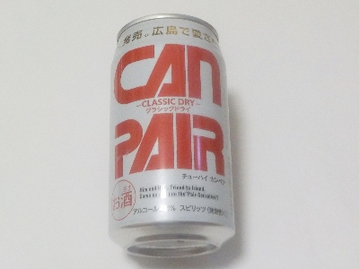
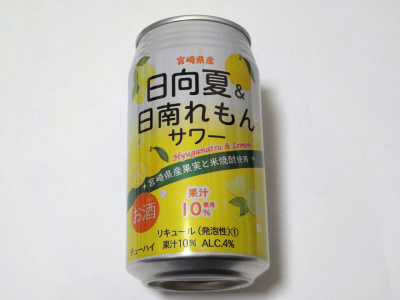
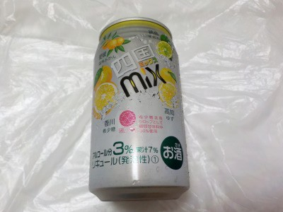

三幸食品工業のカンペア。
2024/09/15

広島で愛されたドライチューハイ、復刻版。だそうです。なんとなく広島カープっぽいデゼインの缶ですね。
原材料がウォッカ、砂糖、炭酸、酸味料です。砂糖味のお酒ってあんまり飲んだことないかも？
甘さが軽めのラムネ風味のお酒だと思いました。個人的には糖質ゼロ系のものより飲み易くていいと思いました。
広島県東広島市安芸津町三津4215番地3
2024/09/15

広島で愛されたドライチューハイ、復刻版。だそうです。なんとなく広島カープっぽいデゼインの缶ですね。
原材料がウォッカ、砂糖、炭酸、酸味料です。砂糖味のお酒ってあんまり飲んだことないかも？
甘さが軽めのラムネ風味のお酒だと思いました。個人的には糖質ゼロ系のものより飲み易くていいと思いました。
2024/01/21

アルコール4%の柑橘もののお酒なので、軽くて飲みやすいです。
果汁が10%あるんですが、甘みが強いので正直レモン味とか日向夏味っていうのはよくわかりませんでした。
両方の味がうまく混ざってて、それぞれの味が分からない感じがしました。
甘くて美味しかったです。
2022/07/02

愛媛の温州みかん、香川の希少糖、徳島のすだち、高知のゆず入りのお酒です。
アルコール3%、果汁7%です。アルコール弱め、柑橘系でさっぱり、砂糖で甘い感じの炭酸飲料です。
柚子の味が一番味がわかりやすかったです。